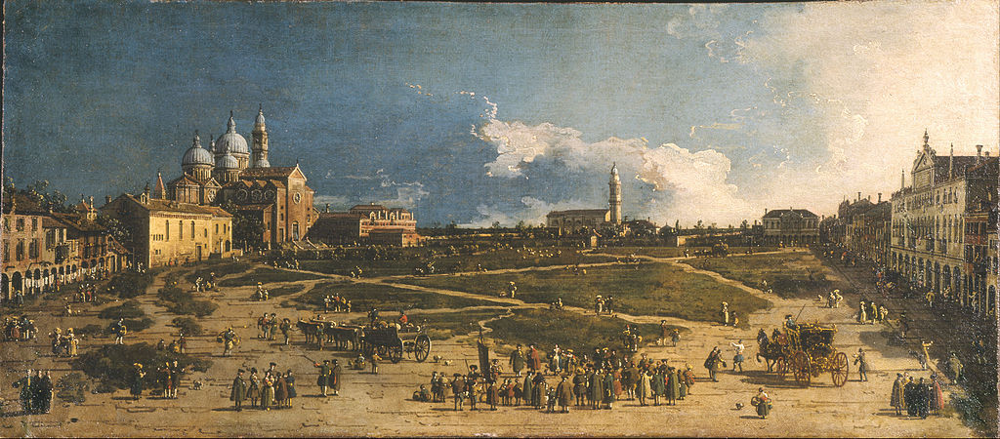

<head>
<meta charset="UTF-8" />
<meta name="keywords" content="drawing, painting" />
<meta name="description" content="drawings by Sunjy" />
<title>Sunjy</title>
<link rel="shortcut icon" type="image/x-icon" href="../../mImages/mCommon/favicon.ico" media="screen" />
<link rel="stylesheet" type="text/css" href="../../mCsses/mCommon/mCssA.css" />
<link rel="stylesheet" type="text/css" href="../../mCsses/mCommon/mCssB.css" />
<link rel="stylesheet" type="text/css" href="../../mCsses/mCommon/mCssC.css" />
<link rel="stylesheet" type="text/css" href="../../mCsses/mCommon/mCssD.css" />
<link rel="stylesheet" type="text/css" href="../../mCsses/mContent/mCssA.css" />
<link rel="stylesheet" type="text/css" href="../../mCsses/mContent/mCssB.css" />
<link rel="stylesheet" type="text/css" href="../../mCsses/mContent/mCssC.css" />
<link rel="stylesheet" type="text/css" href="../../mCsses/mContent/mCssD.css" />
</head>
<script type="text/javascript" src="../../mScripts/mContent/mContentAA.js" /></script>
<script type="text/javascript" src="../../mScripts/mContent/mContentAB.js" /></script>
<script type="text/javascript" src="../../mScripts/mContent/mContentAC.js" /></script>
<script type="text/javascript" src="../../mScripts/mContent/mContentAD.js" /></script>
<script type="text/javascript"></script> 
<script type="text/javascript">
document.write('<div class="mImgAbsolute"></div>');
/*
document.write('<p class="mFontSizeBColor" />From a white paper...</p>');
document.write('<table class="center"><tr><td>');
document.write('');
document.write('</td></tr></table>');
*/
</script>


<script type="text/javascript">
document.write('<p class="mFontSizeBColor" />Prà della Valle in Padua</p>');
document.write('<p class="mFontSizeSColor" />“Prà della Valle in Padua” by Canaletto depicts a public square in Padua, before an extensive makeover in 1775-1776 altered its appearance.<br><br>The painting represents a valuable record of the city’s history, and its grand piazza, with its large grassy surfaces, is bounded by the Basilica of Santa Giustina and by the University College.<br><br>The open square is shown with a multitude of people, plus several horsedrawn carriages and carts making the scene animated and alive.<br><br>The painting is an example of the style called the “Venetian veduta,” which is characterized by the integration of natural and architectural elements into a composition. <br><br>Canaletto was the master of the genre and one of its finest interpreters. Canaletto has created a vibrant painting with a brightness that permeates the scene while a multitude of shadows seems to dance with the figures and buildings.<br><br>Prato della Valle<br><br>The Prato della Valle ( Prà della Valle ) is the largest square in the city of Padua and among the largest in Europe. The current configuration dates back to the period of this painting.<br><br>It is characterized by a central elliptical island surrounded by a water channel on whose sides is a ring of statues.<br><br>There are currently 78 statues, and today’s layout derives from the destruction of six statues depicting Venetian doges demolished by the Napoleonic army in 1797.<br><br>On the Prato della Valle faces the imposing abbey Basilica of Santa Giustina, first constructed in the 5th century, but its present form dates to the sixteenth century. Nearby is the monumental complex of the monastery.<br><br>The other churches around the square, shown in the painting, were demolished at the beginning of the nineteenth century.<br><br>Padua<br><br>Padua is the capital city of the province of Padua in northern Italy. The city is sometimes included, with Venice and Treviso, in the Padua-Treviso-Venice Metropolitan Area. Padua is 40 kilometers (25 miles) west of Venice.<br><br>It hosts the University of Padua, founded in 1222, where Galileo Galilei was a lecturer between 1592 and 1610.<br><br>Padua has played an essential role in the history of art with the university attracting many distinguished artists, such as Giotto, Fra Filippo Lippi, and Donatello.<br><br>The sculptor Antonio Canova produced his first work in Padua, one of which is among the statues that once stood at the Prato della Valle, but now is in the Musei Civici.<br><br>Padua is the setting for most of the action in Shakespeare’s The Taming of the Shrew, and there is a play by Oscar Wilde entitled The Duchess of Padua.<br></p>');
document.write('<table class="center" /><tr><td>');
document.write('<br>The painting represents a valuable record of the city’s history, and its grand piazza, with its large grassy surfaces, is bounded by the Basilica of Santa Giustina and by the University College.<br><br>The open square is shown with a multitude of people, plus several horsedrawn carriages and carts making the scene animated and alive.<br><br>The painting is an example of the style called the “Venetian veduta,” which is characterized by the integration of natural and architectural elements into a composition. <br><br>Canaletto was the master of the genre and one of its finest interpreters. Canaletto has created a vibrant painting with a brightness that permeates the scene while a multitude of shadows seems to dance with the figures and buildings.<br><br>Prato della Valle<br><br>The Prato della Valle ( Prà della Valle ) is the largest square in the city of Padua and among the largest in Europe. The current configuration dates back to the period of this painting.<br><br>It is characterized by a central elliptical island surrounded by a water channel on whose sides is a ring of statues.<br><br>There are currently 78 statues, and today’s layout derives from the destruction of six statues depicting Venetian doges demolished by the Napoleonic army in 1797.<br><br>On the Prato della Valle faces the imposing abbey Basilica of Santa Giustina, first constructed in the 5th century, but its present form dates to the sixteenth century. Nearby is the monumental complex of the monastery.<br><br>The other churches around the square, shown in the painting, were demolished at the beginning of the nineteenth century.<br><br>Padua<br><br>Padua is the capital city of the province of Padua in northern Italy. The city is sometimes included, with Venice and Treviso, in the Padua-Treviso-Venice Metropolitan Area. Padua is 40 kilometers (25 miles) west of Venice.<br><br>It hosts the University of Padua, founded in 1222, where Galileo Galilei was a lecturer between 1592 and 1610.<br><br>Padua has played an essential role in the history of art with the university attracting many distinguished artists, such as Giotto, Fra Filippo Lippi, and Donatello.<br><br>The sculptor Antonio Canova produced his first work in Padua, one of which is among the statues that once stood at the Prato della Valle, but now is in the Musei Civici.<br><br>Padua is the setting for most of the action in Shakespeare’s The Taming of the Shrew, and there is a play by Oscar Wilde entitled The Duchess of Padua.<br>" />');
document.write('</td></tr></table>');
</script>


